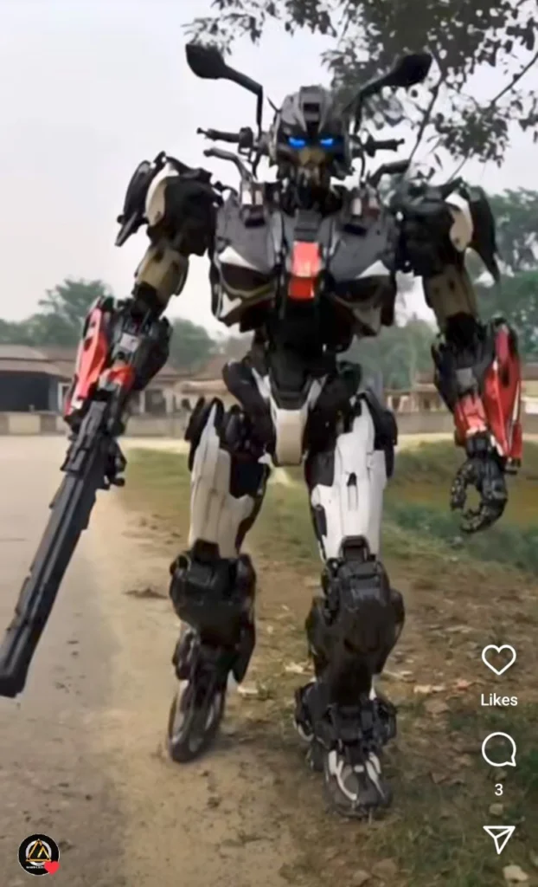

Have you seen those viral Instagram reels where a bike transforms into a futuristic robot? These AI-generated videos are taking over social media platforms like Instagram, Facebook, and YouTube. If you also want to create such a video and go viral, you are in the right place!
In this guide, I will show you step-by-step how to create a Bike to Robot AI video using Pixverse AI, one of the best AI video editing tools. No professional editing skills are required! Just follow the simple steps below and create stunning AI-generated videos in minutes.
What is Pixverse AI?
Pixverse AI is an advanced AI video generator that allows users to create high-quality AI videos with just a few clicks. It offers various effects and templates that transform images into animated videos. Some key features of Pixverse AI include:
✔ AI-Powered Video Generation – Convert photos into realistic videos using AI.
✔ Multiple Effects & Templates – Choose from trending templates like Bike to Robot, Car Transform, and Anime Style.
✔ Easy to Use – No technical skills required; just upload your image and let AI do the work.
✔ Fast Processing – Generate videos in seconds with high-quality output.
How to Create a Bike to Robot AI Video Using Pixverse AI
Follow these simple steps to create your own Bike to Robot AI video in minutes:
Step 1: Open Pixverse AI Website
- Open your web browser and visit Pixverse AI.
- Sign up using your Google account or email.
Step 2: Choose the Robot Transformation Effect
- After logging in, browse through different AI effects.
- Select the Bike to Robot Transformation effect.
Step 3: Upload Your Bike Image
- Click on Upload Image and select a clear photo of your bike.
- Make sure the image has good lighting for better AI results.
Step 4: Generate the Video
- Click on the Generate button.
- Wait for a few seconds while Pixverse AI creates your video.
Step 5: Download & Share
- Once your video is ready, click Download to save it to your device.
- Share your AI-generated video on Instagram, Facebook, YouTube Shorts, and TikTok to go viral!

Tips to Make Your AI Video More Engaging
- Use High-Quality Images: The clearer your image, the better the AI transformation.
- Add Music & Effects: Use apps like CapCut or VN Editor to enhance your video with transitions and background music.
- Optimize for Social Media: Keep the video under 10-15 seconds for better engagement on Instagram Reels and TikTok.
- Use Trending Hashtags: Add hashtags like #AIEditing #PixverseAI #BikeToRobot to increase reach.
Pixverse AI App – Edit Videos on Mobile
If you prefer mobile editing, Pixverse AI also has an Android and iOS app. You can download it from the Google Play Store or Apple App Store and create videos directly from your phone.
Steps to Use Pixverse AI App:
- Install Pixverse AI App from the Play Store.
- Log in and choose the Bike to Robot effect.
- Upload your image and generate the video.
- Download and share instantly!
Conclusion
Creating a Bike to Robot AI video is now easier than ever with Pixverse AI. Just upload your bike photo, select the effect, and let AI do the magic! Whether you want to go viral on Instagram or just create cool AI videos, Pixverse AI is a must-try tool.
If you found this guide helpful, share your thoughts in the comments and let me know if you need more AI video editing tutorials. Keep visiting PromptSeen.com for the latest AI tools and editing tricks! 🚀
FAQs
1. Is Pixverse AI free to use?
Yes, Pixverse AI offers free video generation with some limitations. For advanced features, a premium plan is available.
2. Can I use Pixverse AI on my phone?
Yes, Pixverse AI has a mobile app for both Android and iOS.
3. How long does it take to create a video?
Pixverse AI generates videos within a few seconds, depending on the effect chosen.
4. Can I edit my AI video after creating it?
Yes, you can use apps like CapCut, VN, or KineMaster to add extra effects and music.
5. Is Pixverse AI safe to use?
Yes, Pixverse AI is a trusted AI video editing tool used by content creators worldwide.
🔔 Stay updated with the latest AI editing trends! Follow PromptSeen.com for more tutorials.